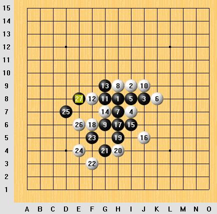

请教恒星一个问题.
首页
五子棋交流
#1 请教恒星一个问题. 作者：无尘 发表时间：2006-7-24 16:01:35
有志青年你好,恒星系列讲座里我有个问题,如果16手反防的话,黑能赢吗.(针对文字2的那种走法)
#2 Re:请教恒星一个问题. 作者：有志青年 发表时间：2006-7-24 20:04:05
#3 Re:请教恒星一个问题. 作者：无尘 发表时间：2006-7-29 18:20:46
嗯,谢谢你.
#4 Re:请教恒星一个问题. 作者：xialin 发表时间：2006-8-15 11:33:57
~~~
#5 Re:请教恒星一个问题. 作者：gerbo 发表时间：2007-2-26 9:09:11
 一打白4点必败哟，嘿嘿~~曾经不知道欺负过多少人拉，现在快闪~~~
一打白4点必败哟，嘿嘿~~曾经不知道欺负过多少人拉，现在快闪~~~
#6 Re:请教恒星一个问题. 作者：sheal 发表时间：2007-7-8 9:56:11
黑棋保留冲四为上策(当白棋堵住冲四为弱防时,可以保留冲四)

黑7后,白8最强防,白10最强防,白14,16也是最强防.
正确的落子顺序当然是必须冲四才可以的情况下才冲四的.哈哈哈哈